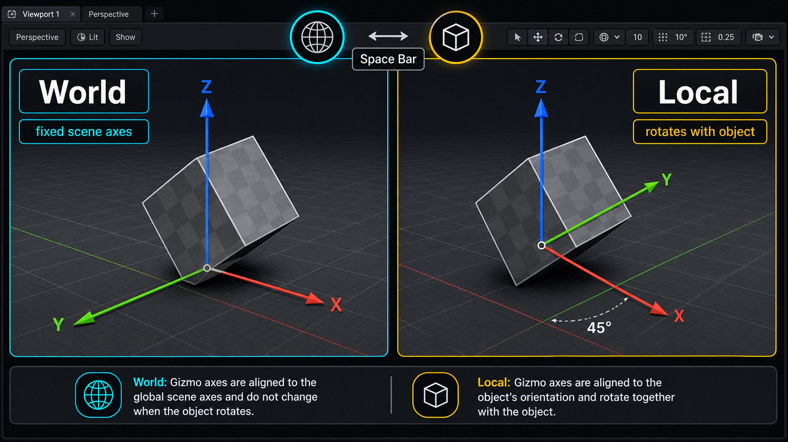
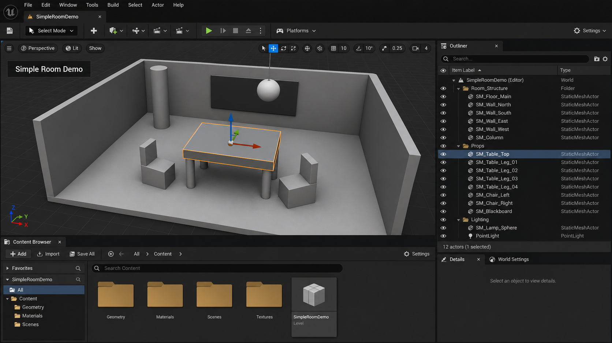

2주차 2교시 — 오브젝트 배치 + 트랜스폼 (학생용)
관련 문서
| 관계 | 문서 |
|---|---|
| 강의 계획서 | 강의계획서: Game Engine II |
| 강의 아웃라인 | 2주차 아웃라인: 에디터 인터페이스 |
- 오브젝트 배치 3가지 방법(Place Actors 패널 / Content Browser 드래그 / Viewport 우클릭)을 직접 써서 씬에 액터를 넣을 수 있다
- 이동·회전·스케일 트랜스폼을 단축키와 Details 패널 수치 입력 두 방식으로 조작할 수 있다
- World 좌표계와 Local 좌표계의 차이를 이해하고, 상황에 맞는 좌표계를 선택할 수 있다
- 다중 선택·복제·이름 변경·폴더 정리로 씬을 처음부터 깔끔하게 관리하는 습관을 들인다
1교시에서는 에디터 인터페이스와 패널 구성을 익혔습니다. 2교시는 그 위에서 씬에 오브젝트를 넣고 움직이는 시간입니다. 배치 3가지 방법, 이동·회전·스케일 트랜스폼, World vs Local 좌표계, 그리고 씬을 깔끔하게 정리하는 습관을 다룹니다.
1교시 복습 + 패널 설정 점검
복습 퀴즈
1교시에서 배운 내용을 빠르게 확인합니다.
창고(Content Browser, 저장된 에셋) vs 무대(Outliner, 씬에 배치된 액터)의 차이입니다.
Details Panel (오른쪽 아래)에 표시됩니다.
오류가 발생합니다. 영문 + 언더바만 사용해야 합니다.
패널 복구 훈련
실습 도중 패널을 실수로 닫는 경우가 꼭 생깁니다. 스스로 복구할 수 있어야 원활하게 실습할 수 있습니다. 지금 한 번 연습해 봅니다.
먼저 Outliner 패널 우측 상단 X 버튼을 눌러 패널을 닫아 보세요. 그리고 아래 절차로 복구합니다.
작업 1 — Outliner 패널 복구
- 화면 최상단의 메뉴바를 보세요. 왼쪽부터 [File] [Edit] [Window] [Tools] [Build] [Help] 순서로 있습니다.
- [Window] 를 클릭하세요. 드롭다운 메뉴가 아래로 펼쳐집니다.
- 드롭다운 안에서 [Outliner] 항목을 찾아 클릭하세요. 목록 중간쯤(알파벳 O)에 있습니다. 클릭하면 Outliner 패널이 다시 나타나고, 보통 에디터 오른쪽 상단에 도킹(탭 형태로 고정)됩니다.
- Details Panel:
[Window]→ 드롭다운에서[Details]클릭 - Content Browser:
[Window]→[Content Browser]위에 마우스를 올리면 서브메뉴가 펼쳐짐 →[Content Browser 1]클릭
패널이 너무 흐트러졌을 때는 레이아웃 전체를 초기 상태로 되돌립니다.
작업 2 — 레이아웃 완전 초기화
- 화면 최상단 메뉴바에서 [Window] 를 클릭하세요. 드롭다운 메뉴가 펼쳐집니다.
- 드롭다운 맨 아래쪽의 [Load Layout] 항목에 마우스를 올리세요. 서브메뉴가 오른쪽으로 펼쳐집니다.
- 서브메뉴에서 [UE4 Classic Layout] 을 클릭하세요. 모든 패널이 처음 설치했을 때 상태로 돌아갑니다. Outliner는 오른쪽 상단, Details는 오른쪽 하단, Content Browser는 화면 하단, Viewport는 가운데에 배치됩니다.
패널 배치가 어떻게 흐트러졌든 [UE4 Classic Layout] 한 번이면 처음 상태로 돌아갑니다. 이것만 기억해도 실습 도중 패널 문제로 막히지 않습니다.
메뉴가 한글로 보인다면 영어로 바꿔야 합니다. 수업 자료와 메뉴 이름이 일치해야 따라가기 쉽습니다.
작업 3 — 에디터 언어 영어로 확인
- 화면 최상단 메뉴바에서 [Edit] 를 클릭하세요. [File] 바로 오른쪽에 있습니다. 드롭다운 메뉴가 펼쳐집니다.
- 드롭다운 맨 아래쪽의 [Editor Preferences…] 를 클릭하세요. 새로운 큰 설정 창이 열립니다. (탭이 아니라 별도 창)
- 설정 창의 왼쪽 패널에서 [General] → [Region & Language] 를 클릭하세요. 또는 설정 창 상단의 검색창에 “language” 라고 입력하면 바로 찾을 수 있습니다.
- 오른쪽 설정 영역에서 [Editor Language] 항목을 찾으세요. 드롭다운 박스를 클릭하면 언어 목록이 나옵니다. [English] 를 선택하세요.
- “에디터를 재시작해야 적용됩니다” 알림이 뜨면 [Restart Now] 를 눌러 재시작하세요.
핵심 개념 1 — 오브젝트 배치 방법 3가지
씬에 오브젝트를 넣는 방법은 3가지가 있으며, 상황에 따라 다르게 사용합니다. 전부 알아두세요. (직접 실습 3가지는 3교시에서 진행하며, 여기서는 배치 방법을 눈으로 익힙니다.)
방법 1 — Place Actors 패널에서 배치 (기본 도형)
가장 자주 쓰는 방법입니다. 큐브, 구, 평면 같은 기본 도형을 바로 꺼낼 수 있습니다.
작업 4 — Place Actors 패널 열기
- 화면 최상단 메뉴바에서 [Window] 를 클릭하세요. 드롭다운 메뉴가 펼쳐집니다.
- 드롭다운에서 [Place Actors] 를 클릭하세요. 목록 위쪽(P로 시작하는 항목)에 있습니다. 클릭하면 보통 에디터 왼쪽에 세로로 긴 패널이 나타납니다.
Shift + 1 을 누르면 Place Actors 패널이 바로 열립니다. (가장 빠름)
패널 구성 — 패널 상단에 탭 버튼들이 가로로 나열되어 있습니다. 각 탭을 클릭하면 해당 카테고리의 액터 목록이 아래에 표시됩니다.
| 탭 이름 | 아이콘 모양 | 내용 |
|---|---|---|
| Basic | 큐브 아이콘 | 기본 도형: Cube, Sphere, Plane, Cylinder 등 |
| Lights | 전구 아이콘 | 조명 액터 |
| Cinematic | 카메라 아이콘 | 카메라, 시퀀서 관련 |
| Volumes | 반투명 박스 아이콘 | 트리거 볼륨 등 |
작업 5 — Cube 배치
- Place Actors 패널에서 [Shapes] 탭을 클릭하세요. (또는 [Basic] 탭 안에서 스크롤하면 도형 섹션이 있습니다.) Cube, Sphere, Cylinder, Plane 등이 아이콘과 함께 보입니다.
- [Cube] 항목 위에 마우스 왼쪽 버튼을 누르고 꾹 잡으세요. 마우스 커서가 바뀌면서 드래그 모드가 됩니다.
- 마우스 버튼을 누른 채로 화면 가운데 Viewport(3D 뷰)로 끌어오세요. Viewport 위에 올리면 배치될 위치에 미리보기가 표시됩니다.
- 원하는 위치에서 마우스 버튼을 놓으세요. Cube가 해당 위치에 생성됩니다.
- 배치 확인 — 오른쪽 상단 Outliner에 “Cube” 항목이 추가됐고, 오른쪽 하단 Details 패널에 Transform 섹션이 보이면 배치 성공입니다.
- Viewport 왼쪽 상단 툴바의
Create버튼 → 드롭다운 →Shapes→ 원하는 도형 선택 - 또는 Viewport 왼쪽 상단 녹색
+아이콘의Add버튼 →Shapes→ 도형 선택
방법 2 — Content Browser에서 드래그 앤 드롭
본인이 임포트한 에셋이나 Starter Content 에셋을 씬에 넣을 때 사용합니다.
Content Browser는 화면 하단에 가로로 넓게 펼쳐져 있는 패널입니다. 안 보인다면 아래 절차로 고정합니다.
작업 6 — Content Browser 항상 보이게 고정
- 화면 왼쪽 하단 구석의 [Content Drawer] 버튼을 클릭하세요. Content Browser가 서랍처럼 아래에서 올라옵니다. 이 상태에서는 다른 곳을 클릭하면 자동으로 닫힙니다.
- 패널 오른쪽 상단의 [Dock in Layout] 버튼(사각형 아이콘)을 클릭하세요. 화면 하단에 영구 고정됩니다.
작업 7 — Starter Content 에셋 배치
- Content Browser 패널의 왼쪽 폴더 트리를 보세요. 맨 위에 [Content] 라는 최상위 폴더가 있습니다.
- [Content] 왼쪽의 > 화살표를 클릭해서 펼치고, [StarterContent] 폴더를 찾아 다시 > 로 펼치세요.
- [StarterContent] → [Props] 폴더를 클릭하세요. 오른쪽 영역에 SM_TableRound, SM_Chair 같은 에셋이 썸네일 형태로 나타납니다.
- 원하는 에셋(예: SM_TableRound)을 마우스 왼쪽 버튼으로 클릭 & 꾹 잡고, 화면 가운데 Viewport로 끌어오세요.
- Viewport 위 원하는 위치에서 마우스 버튼을 놓으세요. 에셋이 씬에 배치되고, Outliner에 이름이 추가됩니다.
Content Browser에서 찾은 에셋은 저장된 파일입니다. Viewport로 드래그해야 비로소 씬에 배치(인스턴스)가 됩니다. 그 전까지는 창고에 있는 상태입니다.
Content Browser 패널 상단의 돋보기 검색창에 에셋 이름을 입력하면 실시간 필터링됩니다. 예: “table” 입력 → 이름에 table이 포함된 에셋만 표시.
방법 3 — Viewport 우클릭 컨텍스트 메뉴
가장 빠른 방법입니다. Viewport 안에서 바로 액터를 소환합니다.
작업 8 — Viewport 우클릭으로 배치
- 화면 가운데 Viewport(3D 뷰) 안에서 배치하고 싶은 위치를 정하세요.
- 그 위치에서 마우스 오른쪽 버튼을 클릭하세요. 작은 팝업 메뉴(컨텍스트 메뉴)가 마우스 커서 위치에 나타납니다.
- 팝업 메뉴에서 [Place Actor Here] 항목에 마우스를 올리세요. 오른쪽으로 서브메뉴가 펼쳐집니다.
- 서브메뉴에서 원하는 카테고리를 선택하세요. [Shapes] → Cube, Sphere, Cylinder, Plane 등 / [Lights] → Point Light, Directional Light 등.
- 원하는 항목을 클릭하면 우클릭했던 바로 그 위치에 액터가 생성됩니다. Outliner에 새 항목이 추가되고, 우클릭한 위치에 오브젝트가 나타납니다.
커서가 있는 위치에 액터가 생성되므로 정확한 위치에 배치할 때 유용합니다. 바닥 위 특정 지점에 소품을 놓고 싶을 때 이 방법이 가장 직관적입니다.
방법 요약
| 방법 | 언제 쓰나 | 위치 |
|---|---|---|
| Place Actors 패널 | 기본 도형 (큐브, 구, 평면) | Window → Place Actors 또는 Shift+1 |
| Content Browser 드래그 | 임포트한 에셋, Starter Content | 화면 하단 Content Browser |
| Viewport 우클릭 | 빠르게, 정확한 위치에 | Viewport 빈 공간 우클릭 |
흔한 문제 — 오브젝트 배치
| 증상 | 원인 | 해결 |
|---|---|---|
| Place Actors 패널이 안 보임 | 패널 미열림 | Window → Place Actors 또는 Shift+1 |
| 드래그해도 Viewport에 안 들어감 | Viewport 포커스 없음 | Viewport 안쪽 클릭 후 다시 시도 |
| Content Browser에 StarterContent 없음 | 프로젝트 생성 시 미체크 | 상단 메뉴 Edit → Plugins에서 Starter Content 확인 또는 별도 제공 |
핵심 개념 2 — 트랜스폼: 이동·회전·스케일
배치한 오브젝트를 움직이는 방법입니다. 트랜스폼은 3D 툴의 기본이자 핵심입니다.
트랜스폼 단축키 전환
트랜스폼 모드 아이콘 — Viewport(3D 뷰) 오른쪽 상단 모서리에 작은 아이콘 4개가 나란히 있습니다 (왼쪽부터): [커서] 선택 / [십자화살표] 이동 / [원호] 회전 / [네모] 스케일. 클릭하면 해당 모드로 전환되고, 현재 선택된 모드는 아이콘이 하이라이트(밝게) 표시됩니다.
| 모드 | 단축키 | 아이콘 모양 | Viewport에서 보이는 기즈모 |
|---|---|---|---|
| 이동 (Move) | W |
십자 화살표 | 빨·초·파 3축 화살표 |
| 회전 (Rotate) | E |
원호 (곡선 화살표) | 빨·초·파 3축 원형 링 |
| 스케일 (Scale) | R |
네모 (작은 정육면체) | 빨·초·파 3축 막대 + 중앙 흰색 큐브 |
오브젝트 위에 나타나는 조작용 핸들입니다. 모드를 바꿀 때마다 기즈모 모양이 바뀌는 것을 Viewport에서 확인하세요. 색상 규칙 — 모든 모드 공통: 빨강 = X축, 초록 = Y축, 파랑 = Z축
이동 (W) — World vs Local 좌표계
이것이 오늘의 핵심입니다. “큐브를 45도 회전시킨 뒤 앞으로 이동하면 어느 방향으로 갈까?” — 지금 직접 확인합니다.
World 좌표계 vs Local 좌표계
| World 좌표계 | Local 좌표계 | |
|---|---|---|
| 기준 | 씬의 절대 좌표 (X: East, Y: North, Z: Up) | 오브젝트 자체가 바라보는 방향 |
| 기즈모 모양 | 항상 같은 방향 | 오브젝트 회전에 따라 기즈모도 따라 회전 |
| 쓰는 때 | 절대 위치로 맞춰야 할 때 | 오브젝트 기준으로 앞뒤좌우 이동할 때 |

좌표계 전환 — Viewport 우측 상단 툴바에서 이동/회전/스케일 아이콘 바로 오른쪽에 좌표계 전환 아이콘이 있습니다.
- [지구본 모양] = World 좌표계 (씬 기준)
- [큐브 모양] = Local 좌표계 (오브젝트 기준)
- 한 번 클릭할 때마다 World /︎ Local 이 토글(전환)됩니다. 현재 좌표계는 아이콘 모양으로 알 수 있습니다.
Space Bar — 키보드만으로 World /︎ Local 토글. 가장 빠릅니다.
예제 — World vs Local 차이 확인
- Cube를 씬에 배치합니다.
E키(회전)로 Z축 기준 45도 회전합니다.
W키(이동) → World 모드에서 빨간 X축 화살표를 드래그합니다. 씬의 X방향으로 이동합니다 (큐브가 바라보는 방향 무시).
- Space Bar로 Local로 전환합니다.
- 빨간 X축 화살표를 드래그합니다. 큐브가 바라보는 “앞 방향”으로 이동합니다.
- 같은 화살표를 드래그해도 좌표계에 따라 이동 방향이 달라지는 것 — 이것이 World vs Local의 차이입니다.
캐릭터가 오른쪽으로 회전해 있을 때, 그 캐릭터를 “앞으로” 이동시키려면 어떤 좌표계가 맞을까요? → Local. 캐릭터가 바라보는 방향이 기준이어야 하기 때문입니다.
이동 — Details Panel 수치 입력
작업 9 — Details Panel 수치 입력으로 이동
- 먼저 Viewport에서 오브젝트를 클릭하여 선택하세요. 오브젝트 주위에 주황색 테두리가 나타나면 선택된 것입니다.
- 화면 오른쪽 하단의 Details Panel을 보세요. (Outliner 아래에 위치) 선택한 오브젝트의 이름이 패널 맨 위에 표시됩니다.
- Details Panel을 조금 아래로 스크롤하면 [Transform] 섹션이 있습니다. 접힌 상태라면 [Transform] 글자 왼쪽의 > 화살표를 클릭해서 펼치세요.
- Transform 섹션 안에 세 행이 있습니다. Location(위치) / Rotation(회전 각도) / Scale(크기) 각각 X, Y, Z 숫자 칸 3개입니다.
- 숫자 칸을 클릭하면 편집 가능해집니다. 원하는 숫자를 입력하고 Enter를 누르세요. 예: Location의 X 칸에 “0” 입력 → 오브젝트가 X=0 위치로 이동.
드래그보다 정확한 위치가 필요할 때 사용합니다. “정확히 X=0, Y=0, Z=0에 놓고 싶다” → Location 값을 직접 입력합니다. 리셋 방법: 각 행(Location/Rotation/Scale) 오른쪽 끝에 작은 노란색 되돌리기 화살표(Reset︎) 아이콘이 있습니다. 클릭하면 해당 값이 기본값으로 복원됩니다.
회전 (E)
E 키를 누르면 회전 기즈모가 표시됩니다.
기즈모 색상과 축
| 색상 | 축 | 회전 방향 |
|---|---|---|
| 빨강 | X축 | Roll (앞뒤로 눕히기) |
| 초록 | Y축 | Pitch (앞뒤로 기울이기) |
| 파랑 | Z축 | Yaw (좌우로 돌리기) |
Details Panel → Transform → Rotation 칸에 각도를 직접 입력하는 것도 가능합니다.
Viewport 우측 상단 툴바에서 좌표계 아이콘(지구본/큐브)보다 더 오른쪽에 격자 모양 아이콘 3개가 있습니다. 두 번째가 회전 스냅(옆에 “10.0” 같은 숫자)입니다. 숫자를 클릭하면 스냅 단위를 바꿀 수 있고(5, 10, 15, 45, 90도 등), 격자 아이콘 자체를 클릭하면 스냅 켜기/끄기가 전환됩니다 (파란색=켜짐, 회색=꺼짐).
스케일 (R)
R 키를 누르면 스케일 기즈모가 표시됩니다.
- 중앙 흰색 정육면체 핸들 드래그 → 3축 균등 스케일 (XYZ 동시)
- 빨강/초록/파랑 핸들 드래그 → 해당 축만 독립 스케일
Details Panel → Transform → Scale 칸에 직접 입력하는 것도 가능합니다. Scale 행에서 X, Y, Z 칸 사이에 작은 자물쇠 아이콘이 있습니다.
- 자물쇠가 잠김 상태: 한 축 값을 바꾸면 나머지 축도 비례하여 자동 변경 (균등 스케일)
- 자물쇠가 열림 상태: 각 축을 독립적으로 조절 가능 (비균등 스케일)
스케일을 음수로 입력하면 오브젝트가 뒤집힙니다. 의도적으로 쓸 수도 있지만, 실수라면 양수로 되돌리세요.
스냅(Snap) 설정 통합 정리
스냅 아이콘 — Viewport 우측 상단 툴바의 오른쪽 끝 부분에 격자 모양 아이콘 3개가 나란히 있습니다. 각각 옆에 숫자가 적혀 있습니다: [격자 | 10] 이동 스냅 / [원호 | 10.0] 회전 스냅 / [네모 | 0.25] 스케일 스냅.
- 아이콘 자체를 클릭 → 스냅 켜기/끄기 전환 (파란색 = 활성, 단위에 딱딱 맞춰 이동 / 회색 = 비활성, 자유롭게 이동)
- 아이콘 옆 숫자를 클릭 → 드롭다운에서 스냅 단위 변경 (이동: 1, 5, 10, 50, 100 cm / 회전: 5, 10, 15, 45, 90도 / 스케일: 0.25, 0.5, 1.0 등)
실습에서는 이동 스냅 10, 회전 스냅 10도가 기본값입니다. 세밀한 조정이 필요하면 스냅을 끄거나(아이콘 회색으로) 단위를 줄이세요.
핵심 개념 3 — 씬 구성 기초 팁
오브젝트가 많아지면 씬이 복잡해집니다. 처음부터 정리하는 습관이 필요합니다.
다중 선택
작업 10 — 다중 선택
- 개별 추가 선택 — Viewport에서 첫 번째 오브젝트를 클릭한 뒤,
Ctrl키를 누른 채로 두 번째·세 번째 오브젝트를 클릭합니다. 클릭할 때마다 선택에 추가됩니다. (이미 선택된 것을 다시 클릭하면 해제)
- 개별 추가 선택 — Viewport에서 첫 번째 오브젝트를 클릭한 뒤,
- 박스 셀렉션 — Viewport 빈 공간에서 마우스 왼쪽 버튼을 누르고 드래그합니다. 반투명 사각형 안에 들어온 오브젝트가 전부 선택됩니다.
- 전체 선택 —
Ctrl + A→ 씬에 있는 모든 오브젝트 선택.
- 전체 선택 —
오브젝트 복제
작업 11 — 오브젝트 복제
- 제자리 복제 — 오브젝트 선택 →
Ctrl + D→ 같은 위치에 복사본 생성.
- 제자리 복제 — 오브젝트 선택 →
- 드래그 복제 — 오브젝트 선택 →
Alt + 드래그→ 드래그하면서 복제.
- 드래그 복제 — 오브젝트 선택 →
Alt + 드래그가 더 빠르고 직관적입니다. 벽 4개를 만들 때 특히 편리합니다.
오브젝트 이름 변경
작업 12 — 오브젝트 이름 변경
- Outliner에서 변경 (가장 쉬움) — 화면 오른쪽 상단 Outliner 패널에서 바꾸고 싶은 오브젝트 이름을 더블클릭 → 편집 가능한 텍스트 상자로 바뀜 → 원하는 이름 입력 → Enter. (예: “Cube” → “SM_Floor_Main”)
- Details Panel에서 변경 — Viewport에서 오브젝트를 클릭하여 선택 → 오른쪽 하단 Details Panel 맨 위의 이름 텍스트 칸을 클릭 → 이름 수정 → Enter.
이름은 배치 즉시 바꾸는 것을 권장합니다. 나중에 20개가 쌓이면 어떤 것이 어떤 것인지 구분할 수 없게 됩니다.
그룹핑으로 정리
관련된 오브젝트들을 묶어서 관리하는 두 가지 방법입니다.
작업 13 — Ctrl+G 그룹 만들기 (일시적 묶음)
- Viewport에서 묶고 싶은 오브젝트들을
Ctrl + 클릭으로 다중 선택하세요.
- Viewport에서 묶고 싶은 오브젝트들을
Ctrl + G를 누르세요. Outliner에 “GroupActor” 라는 새 항목이 생기고, 선택했던 오브젝트들이 그 아래 하위 항목으로 들어갑니다. 이제 GroupActor를 선택하면 묶인 오브젝트 전체를 한 번에 이동·회전·스케일할 수 있습니다.
작업 14 — Outliner 폴더로 정리 (영구 분류) — 더 권장
- 화면 오른쪽 상단 Outliner 패널의 빈 공간에서 마우스 오른쪽 버튼을 클릭하세요. 컨텍스트 메뉴(팝업)가 나타납니다.
- 메뉴에서 [Create Folder] 를 클릭하세요. Outliner 목록에 새 폴더가 생기고 이름 편집 상태가 됩니다.
- 폴더 이름을 입력하고 Enter로 확정하세요. (예: “Walls”, “Props”, “Lights”)
- 정리할 오브젝트를 마우스로 클릭 & 드래그하여 방금 만든 폴더 위에 놓으세요. 오브젝트가 폴더 안으로 들어갑니다. 폴더 왼쪽 > 화살표로 펼침/접힘을 전환합니다.
폴더가 더 직관적입니다. 3교시 실습에서는 이 방식으로 정리하세요.
숨기기·잠금
숨기기·잠금 아이콘 — Outliner 패널에서 각 오브젝트 이름 오른쪽 끝을 보세요. (마우스를 행 위에 올리면 아이콘이 나타날 수 있습니다.)
- ** 눈 아이콘 클릭** → Viewport에서 숨기기/보이기 전환. 눈이 열려 있으면 보임, 사선이 그어지면 숨김.
- ** 자물쇠 아이콘 클릭** → 선택·이동 잠금/해제 전환. 잠금 상태면 Viewport에서 클릭해도 선택되지 않습니다.
- 숨기기: 뷰포트에서만 안 보이며, 게임 플레이 시에는 다시 표시됩니다. 복잡한 씬에서 특정 오브젝트를 작업할 때 나머지를 임시로 숨깁니다.
- 잠금: 잘못 건드리면 안 되는 오브젝트에 사용합니다. 바닥이나 하늘처럼 고정된 것들에 적합합니다.
- 아이콘이 안 보인다면: Outliner 패널 오른쪽 상단의 눈 아이콘 버튼을 클릭해서 열 표시를 활성화해야 할 수 있습니다.
흔한 문제 — 트랜스폼 & 씬 구성
| 증상 | 원인 | 해결 |
|---|---|---|
| 기즈모가 보이지 않음 | 오브젝트 미선택 | Outliner 또는 Viewport에서 오브젝트 클릭 |
| 오브젝트가 너무 작거나 큼 | 스케일 기본값 문제 | Details → Transform → Scale 직접 수치 입력 |
| Local 모드에서 이동이 이상함 | World로 되어있음 | Space Bar로 Local 전환 확인 |
| Outliner에 오브젝트가 너무 많음 | 중복 배치 | Ctrl+Z로 되돌리기, 또는 불필요한 것 Delete |
예제 — 간이 방 만들기
핵심 개념 1·2·3을 통합한 예제입니다. 3교시 실습의 미리보기로 활용합니다.
나쁜 씬 vs 좋은 씬
먼저 Outliner의 두 가지 상태를 비교합니다.
나쁜 씬 Outliner
Outliner:
├── Cube
├── Cube2
├── Cube (1)
├── Cube (2)
├── Cylinder
├── Sphere
├── Sphere2
├── Plane이 상태에서는 어떤 것이 바닥이고 어떤 것이 벽인지 알 수 없습니다.
좋은 씬 Outliner
Outliner:
├── [Folder] Room_Structure
│ ├── SM_Floor_Main
│ ├── SM_Wall_North
│ ├── SM_Wall_South
│ ├── SM_Wall_East
│ └── SM_Wall_West
├── [Folder] Props
│ ├── SM_Table_Center
│ ├── SM_Chair_01
│ └── SM_Chair_02
└── [Folder] Lighting
└── DirectionalLight_Main이름만 봐도 무엇인지 알 수 있고, 폴더로 분류되어 있습니다. 3교시 실습의 목표가 바로 이것입니다.
라이브 시연 — 간이 방 코너 만들기
바닥 하나, 벽 두 개, 소품 하나로 간단한 방 코너를 만듭니다.

Step 1 — 바닥 배치
- Place Actors 패널 (Window → Place Actors) → Shapes 탭 → Plane → Viewport로 드래그
- W키 이동으로 Location X=0, Y=0, Z=0으로 이동
- R키 스케일 → X/Y축으로 충분히 넓게 확장
- Outliner에서 이름 더블클릭 → “SM_Floor_Main”으로 변경
Step 2 — 벽 배치
- Place Actors → Cube 드래그
- R키로 스케일: X(두께 얇게), Y(폭 넓게), Z(높게) 조절
- W키 이동으로 바닥 끝에 붙이기
- Outliner 이름 → “SM_Wall_North”
- Alt + 드래그로 복제 → 옆으로 이동 → “SM_Wall_West”
Step 3 — 폴더 정리
- Outliner 빈 곳 우클릭 → Create Folder → “Room_Structure”
- SM_Floor_Main, SM_Wall_North, SM_Wall_West 모두 선택 → 폴더로 드래그 앤 드롭
이렇게 정리하면 팀원이 봤을 때도, 한 달 뒤 본인이 다시 봤을 때도 바로 알 수 있습니다.
핵심 요약
씬에 오브젝트를 넣는 방법은 3가지, 움직이는 방법은 이동·회전·스케일 트랜스폼, 그리고 World vs Local 좌표계 선택과 폴더 정리 습관이 깔끔한 씬을 만든다.
3줄 요약:
- 배치 3가지 — Place Actors 패널 / Content Browser 드래그 / Viewport 우클릭
- 트랜스폼 —
W이동 /E회전 /R스케일. 정확한 값은 Details 패널 수치 입력 - World vs Local —
Space Bar로 전환. 오브젝트 기준으로 이동할 땐 Local
3교시 실습 예고
3교시에서는 여러분이 직접 공간을 만듭니다.
실습 과제: 기본 도형으로 공간 만들기
교실, 카페, 방 — 어떤 공간이든 좋습니다. 기본 도형(Cube, Sphere, Cylinder, Plane)만 사용하여 공간을 표현하세요.
필수 조건
- 오브젝트 8개 이상 배치
- 모든 오브젝트에 의미 있는 영문 이름 부여 (SM_ 접두어 권장)
- Outliner 폴더로 분류 (최소 2개 폴더)
- 이동·회전·스케일 세 가지 트랜스폼 모두 사용
제출 방법
- 뷰포트 + Outliner가 같이 보이는 스크린샷 1장
- Outliner를 충분히 펼쳐서 이름이 보이는 스크린샷 1장
- LMS에 2장 업로드
바닥(Plane)부터 먼저 깔고, 벽(Cube)으로 경계를 만드세요. 그 다음에 소품을 채워가면 자연스럽게 공간이 만들어집니다.